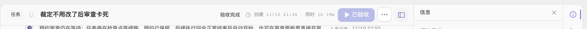
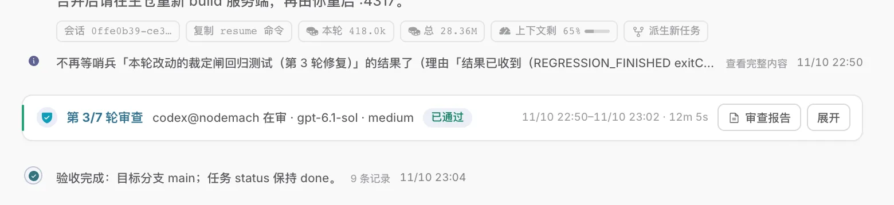
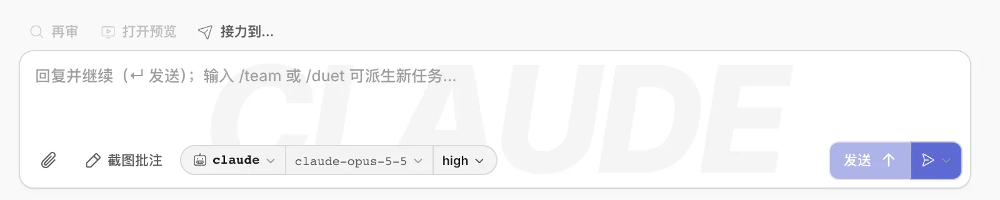
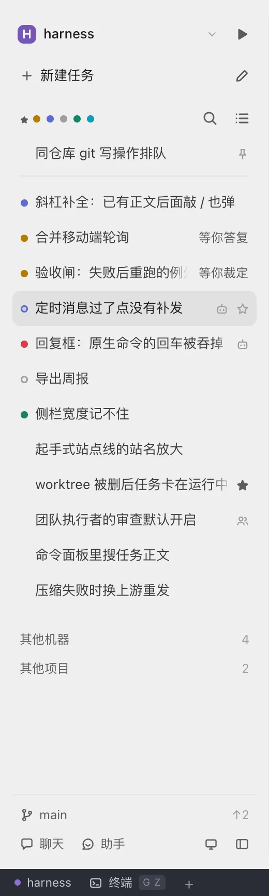
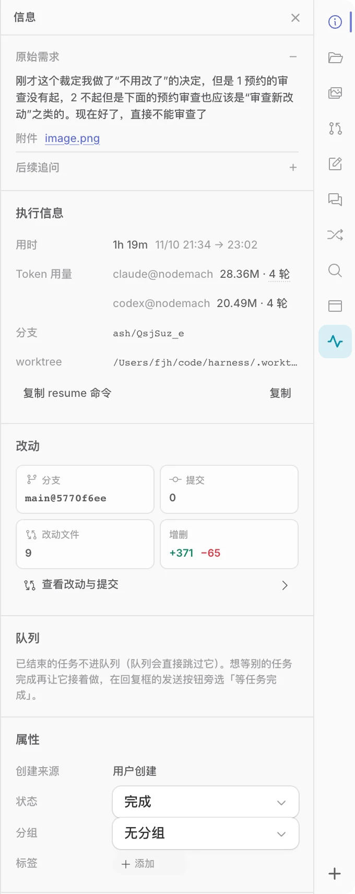
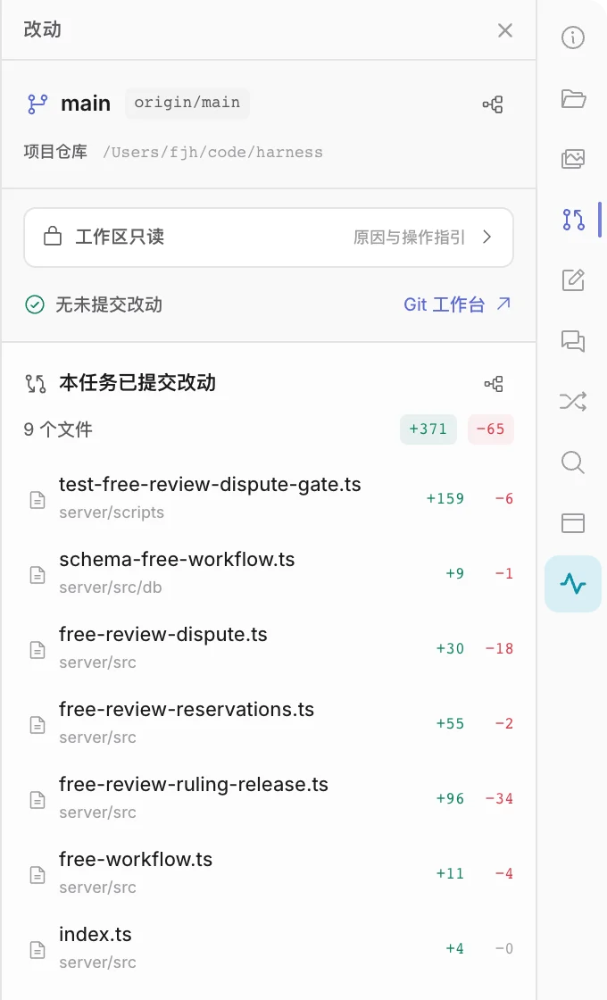
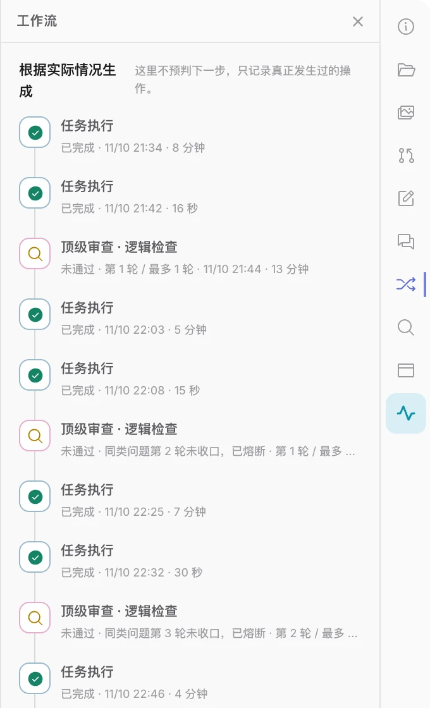
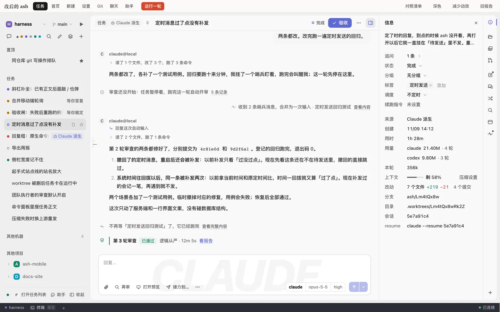

你说的「重」和「繁琐」量得出来：一个已完成任务的页面，一屏里有 113 个能点的东西、224 段文字、68 个带框的元素。Codex 和 Claude Code 的功能并不少，只是默认只给你看一件事，其余等你要的时候才出现。界面静下来以后，少量的动效才显得高级。
实心的八处要改。空心的两处是有意的设计，留着。
执行器名 · claude-opus-5-5 · high · 11/10 22:50 · 20s。只留名字，其余悬停再给。重是数量问题：一屏里常驻的东西太多。乱是规则问题：每一块都在用自己的写法。前者靠减，后者靠定。逐个去修上面那几处，三个月后会长出新的几处。
会话号、模型名、token 数、时间戳、耗时，和智能体说的话用同样的权重摆在一起；每个回合尾部再挂一排操作。读一段回复，眼睛要先绕过四组数字。
这些东西都有用，但不是每次都要用。一屏 113 个可点的控件，绝大多数这一刻用不上。
内容常驻，操作悬停才出现，元数据指上去再看。
智能体说了什么、改了什么常驻
复制、派生、删除悬停
时间、会话号、用量、耗时悬停，或右侧面板
模型、智能水平回复框那颗胶囊里已经有
验收、合并、哨兵的内部状态词翻成人话，或不显示
凡是布局没有讲清的地方，都补了一句话：占位符里教快捷键，开关旁边写「已开启」，设置页每个标题下面一段说明，空面板再说一遍这里是干什么的。
每一句都没错，合在一起就是一屏 224 段文字，真正的内容反而要找。
一句说明出现的地方，先问布局能不能替它说。
回复并继续（↵ 发送）；输入 /team 或 /duet 可派生新任务…回复框占位
已结束的任务不进队列（队列会直接跳过它）。想等别的任务完成…右侧面板
这里不预判下一步，只记录真正发生过的操作。工作流面板
已开启开关旁边
卡片、药丸、统计格、分隔线：一屏 68 个带边框的元素，28 个是四边都描了线的盒子，有的盒子里还套着盒子。
每一条线都在说「这里有个东西」。线多了，就没有哪里是重点。
分组先用留白，再用一条线，最后才用盒子。盒子里不再放盒子。
设计令牌只定了颜色和阴影。字号、间距、圆角、字重、层级、动效全是每个文件各写各的，所以每加一块界面，就多一组「差不多」的数。
结果是同一屏里从 8px 到 13px 几乎每半个像素一档。全部样式里四分之三的字号声明小于 12px，9px 和 9.5px 加起来用了 373 次。看久了累，不只因为多，还因为小。
控件也一样：原生 <select> 有 33 处，和自绘下拉混着用；设置页的标题是 29px，主区没有一处这么大。
字号 5 档、圆角 4 档、字重 3 档（苹方真有的那三款，见 03）、动效 3 档，下拉一种。正文之外最小 12px。
聊天的深紫、助手的淡蓝、左下角的深色状态栏，都是有意的设计，留着。
原生下拉混用和设置页的大标题，我按尺度问题并进了上一条。它们也是有意的话，说一声，一并撤；清单里这两条标了「要你点头」。右侧面板各格各写各的，放到 04 单说。
功能都在，默认只给你看一件事。配色和圆角是其次。
| 它们的共性 | ash 现在 | |
|---|---|---|
| 输入框 | 全页最重的元素，居中，一个容器装下全部控件 | 上面一排动作，下面一排动作，占位是一句三十多个字的长句 |
| 工具调用 | 折成一句人话：「读了 3 个文件」 | 「执行过程 · 3 工具」淡到看不见，展开是原始 JSON |
| 元数据 | 悬停或侧板，正文里没有数字 | 每个回合头尾各一排 |
| 分组 | 留白和对齐，几乎没有盒子 | 一屏 68 个带框的元素，卡片里再套卡片 |
| 空状态 | 就是输入框本身 | 三行字，叫你去任务树里选一项；输入框要按 C 才出来 |
| 运行中 | 一直在动的只有正在做的那一行 | 全应用「在跑」有 6 种画法、5 种颜色，周期互不相同。见 06 |
头上只说两件事：这是哪个任务，现在怎样。类型缩成标题前面的一个灰图标，来源是标题后面的一个灰图标，名字都在提示里；图钉紧跟标题，置顶了才常显，没置顶的指到头部、或者键盘走到它才出来。状态是一个词，灰按钮多说的那半句接在它后面。
按钮一颗不留。验收、重试、运行搬到回复框上面那一行（见下面「回复框」），停止是发送键；时间住进右侧面板，「重新排队」收进更多。你要的置顶和任务区分都还在，只是不再各占一颗带字的徽记。
现在
下表数的是头部那一行里同时摆着几样东西：类型、来源、图钉、标题、状态词、时间（创建和用时算一样）、每颗按钮、每个图标键，各算一样。改后是五样：类型图标、标题、状态词、更多、面板开关；智能体开的任务多一个来源图标，置顶了的多一颗图钉（样机第四行）。
| 任务的状态 | 现在 → 改后 | 少掉的去了哪 |
|---|---|---|
| 已验收，或者在等你答复 | 8 → 5 | 时间进面板；灰按钮并进状态词；没置顶的图钉指到才出 |
| 运行中 | 8 → 5 | 同上；停止是发送键 |
| 失败 | 9 → 5 | 同上；验收、重试在回复框上面那一行 |
| 失败，而且还排在队列里 | 10 → 5 | 同上；「重新排队」进了更多 |
按钮没有消失，是搬走了：这张表只数头部这一行。失败的两行按自由工作流的任务数：起手式的任务失败时没有「验收」。验收完成的任务，状态词前面不再有点：它不需要你看。
会话是一份记录，不是通知栏。平时只有三样：你说的，它说的，里程碑一句——审查出了结论、验收了。ash 自己的回执（审查已预约、开始盯、任务暂停、不再等了……服务端有七十多处在往任务时间线里写）不单独占行，记在它所属的那一回合上：指到这一回合，操作里多一项「N 条记录」，点开是一份带时刻的流水。
「ash 自动输入」那张白卡也不占行：它是这一回合的起因，写在回合头名字后面，原文点了再看；照审查意见改、重试起的回合，同一个位置各是一句。答过的提问是你的一个气泡，问题引在答案上面。要你动手的事不在会话里，在回复框上面那一行。
回合尾的药丸换成三个图标：复制、派生、更多，平时不画。药丸里的本轮、总量、上下文，是你 8 月 7 日定下并排放在回合尾的；你同意过收走，这里再确认一次去处：连同会话号和 resume 命令，都进右侧「信息」，上下文那颗带着的「压缩设置」入口一起过去。里程碑那一行的时间，连同谁审的、用时，紧跟在字后面，指到才显示；触屏上一直显示。
现在
两条都改了，各补了一个测试用例。回归测试 17 条全部通过，改动没有超出这两条意见的范围。
审查出了结论、验收了里程碑一句，常显
审查已预约、开始盯、任务暂停、不再等了记在所属的回合上，指到才有「N 条记录」
ash 自动输入、照意见修复、重试回合头名字后面一句起因
答过的提问你的气泡，问题引在答案上面
验收、重试、运行回复框上面那一行
执行者驳回了审查意见，等你裁定该在回复框上面那一行；样机没有画
位置不动。只在你自己滚的时候出现，停下约一秒淡出；指着它、或者键盘聚焦到它时不淡出。智能体输出带着页面往下走，它不出来。
回到底部的那颗不改：往上翻的时候来了新消息，它是唯一的提示。
在两个框里各滚一下，再点「模拟输出」。
水印留着。占位缩成「回复…」，它就透出来了。框上那排动作并进框里：附件、再审、打开预览、接力到…、更多在左，胶囊和发送键在右；截图批注和预览日志进「更多」。派审、预览、接力留在明面，是现有代码写明的要求——任务跑着也得看得见、点得动。点「再审」出来的派审对话框也收了一遍：四行字段、一个主动作，在样机里看。
发送设置没有搬家：箭头右边连着一小截，上面一个小尖角，点它还是原来那张「发送设置」，三种发法都在。平时键上没有字。只要这一条不会像平常那样马上发出去，键就变宽、写上字，尖角换成时钟或沙漏。发出后照旧进输入框上方的待发送列表，可以撤回。连体的小尖角是邮件客户端「稍后发送」的通行做法（凭已有知识）。
团队回复框和新建任务的「启动设置」是同一颗键，三处一起改。新建任务默认那一档也只画箭头，「创建并运行」和它的快捷键进这颗键的悬停提示，面板底部那行快捷键小字整行收走；你觉得新手会看不懂的话，这一处留字就行。任务在跑、输入框空着时，这颗键的位置就是停止键；打了字它变成「排队发送」，左边多一颗小的停止键，什么时候都停得下来。排着队的任务也是这颗键，停就是不排了。任务头上不再有停止——这是新增的行为，要你点头。
验收在哪：回复框上面多一行，不带框。左边是这个任务还没验收的改动，右边是轮到你的那一步——验收、重试、运行。一轮结束时你要做的决定就两个，再说一句，或者收下；两样摆在一起，它要验的东西就在按钮旁边。「验收」不再是实心主色，因为回复框里已经有一颗主色的发送键；点它和点左边那一段到的是同一处，改动工作区，真正的「验收通过」还在那里面。失败时右边是「重试 验收」，取消后是「运行 验收」；任务在跑时只剩左半边；验收过了、又没别的事要你做，这一行不画。
现在
发送的快捷键指到发送键上的提示
可粘贴图片或文件指到附件钮上的提示
为什么发不出去键是淡的时候，指上去说
引导会话怎么用待发送那一条的按钮提示
空输入时左半灰、右半实整颗键同明同暗；尖角照样点得动
工具行现在一排六样，长相差不多：聊天、筛选、搜索、随手记、分组管理、新建任务——去别处的、找东西的、新建的混在一起。改后一行只管一件事：第一行说在哪儿（项目、分支、常用命令，不动）；第二行新建，「新建任务」占一整行，右边是随手记；第三行找，筛选的六颗圆点原样，右边是搜索和任务列表；最底下一行去别处，聊天、助手。分组管理留在项目菜单的「设置」和 ⌘K 里。
任务树不写「置顶」「任务」两个标题：置顶的排最前、行尾一颗图钉，和后面的隔一道缝。智能体开的任务，行里那颗带字的彩色胶囊换成行尾一个灰图标，点它去来源任务。「其他机器」「其他项目」各折成一行，右边写有几条。底部的连接灯拿掉，状态栏右端一直写着「已连接」。
现在 / 改后
左边是 01 那张截图的左边一列。右边取自样机，任务是编的，所以两边的行对不上；看的是排法。
设置页「粗体特别多」，根子在字重表上。全应用 444 处字重声明、23 种取值，72% 是 600 及以上，正文是 450。中文落到苹方只有三款：400 是常规，450 和 500 排出来都是中黑，550 往上全是中粗。所以正文其实已经是中黑，一切「强调」又挤在同一档中粗里——粗的地方很多，却分不出层次。
改后只用苹方真有的三档，各面降一级：正文 400；小标题、卡片名、主按钮 500；600 只给页标题和对话框标题。分层先靠颜色和位置，不靠加粗。样机的设置十一页、Git、首页、任务页都按这个改了，在样机里看设置页。
七个值上面那一行是你的浏览器现排的。在装着苹方的 Mac 上，七个值只有三种样子；我是在这台机器的无头 Chromium 里量的墨量，没有在别的浏览器和系统上量。
横排带字的页签你试过，嫌繁琐，所以竖轨留着，不换回横排。一眼看过来乱，乱在下面五处，外加条上十格不分组（默认九格，加一格用过才冒出来的哨兵）。先看其中四格。



一种行，一种高亮，同一屏不说两遍。
| 格数 | 不动，默认九格都留着 | 你做竖轨，就是为了每个面板常驻可见。想再少几格，见表后 |
| 高亮 | 选中一种，状态是小点 | 青底取消。小点在选中的格上也看得见，青底做不到 |
| 分簇 | 三簇，中间留一道空 | 源码里本来就按三段排：看任务本身，看它改了什么，跟它一起干活。断在「信息」后和「改动」后，这两个断点要你确认 |
| 提示 | 第一次等 0.4 秒，连着看不等 | 现在零延迟，鼠标划过竖轨，每格都弹一下 |
| 再点一次 | 收起整栏 | 和任务头最右那颗键是同一个动作。现在点已选中的格什么都不发生；VS Code 和 JetBrains 的竖条都是再点一次收起（凭已有知识） |
| 关闭键 | 仍是把这一格移出竖轨 | 提示写明「可从 + 加回」。「信息」也摘得掉，但它是必开格，下次打开面板会自己回来，和现在一样 |
| 你的减法 | 任务状态变了也不回来 | 现在任务状态一变，摘掉的格就被拽回来。哨兵、子智能体两格是例外：它们「用过才浮现」，摘掉后重新进这个任务还会冒出来（按代码推断，没实测），这一轮不改。下一步加一份跨任务的「我的默认格」，面板宽度也跨任务记住 |
顺序、快捷键、「+」都不动：备忘的手写入口还在备忘这一格，哨兵和子智能体照旧用过才浮现。团队视图用的是同一个外壳，竖轨的改动自动跟上，团队的信息面板换同一套公共件。
想让条上再少几格：默认可以只上五格（信息｜改动｜备忘、侧聊、审查，预设工作流的任务多一格工作流），文件、生成物、预览指正、自由工作流的工作流退到「+」和快捷键。团队视图现在默认就是五格。代价是老任务上这四格会被摘掉一次，常用的要从「+」加回；名单也只是按用途推的，没有使用数据。这一条我没放进主线，你定。
下面「改后」那一块就是样机里的右侧面板，每一格都是活的：点格子切换，再点一次收起整栏（收起后右上角剩任务头那颗键，点它展开）；关闭键把这一格移出竖轨，「+」里加回来。可以自己摘几格，看看五格的样子。
每一条配一张「改后」的截图，取自一份可以点的样机。点截图，样机会停在那一处。

打开样机任务、首页、新建、设置、Git、聊天、助手七个面，都能点。右上角的「对照清单」把下面每一条标在页面上。它是示意，没有接真实数据。你说得对，这一块 ash 是缺的。这一节的依据是你电脑上装着的 Codex 和 Claude Code：命令行、桌面应用、VS Code 扩展的安装包，加上 Codex 开源的命令行源码。读的是代码，没有对着运行中的界面看；ash 这一列同样是读 web/src 得出的，没有对着一轮真实执行看。
它们：一直在动的只有「正在做的那一行」，其余每个时刻各有一下很短的过渡。Codex 是那一行字上的流光；Claude Code 是行首一个起伏的符号或闪点，加一个会换的动词。消息出现、正文淡入、做完换成过去式，都只动一次，动完就停。
ash 反过来：全应用「它在跑」有 6 种会动的画法、5 种颜色、6 个互不相同的周期（侧栏、任务头、会话、团队页都算上）。而一轮里真正发生的变化——消息出现、回合收口、状态词、按钮换态、任务行换位、数字更新——都是一帧切换；工具来了，也只有一行 9.5px 的淡字会换字。纯出字、没调工具的回合，会话里没有任何东西表示它还在跑。
| Codex | Claude Code | ash 现在 | 改后 | |
|---|---|---|---|---|
| 发出消息 | 气泡上移 4px 淡入，0.2 秒。发送键的图形连续变成停止键，0.48 秒；这一条由远程开关控制，这台机器上开没开没核到，没开时是直接换图标。桌面 | 气泡带一点回弹长出来，0.45 秒。发送和停止叠在同一格里交叉淡，0.2 秒。桌面 | 气泡一帧出现。回复框里没有停止键，发送键上的字跳成「排队发送」。 | 气泡上移 4px 淡入。发送键原地变成停止键。 |
| 等它开口 | 一行「Thinking」，字上每 4 秒扫 1 秒的光；它待在固定高度的槽里，不推挤正文。桌面 | 一个大小起伏的符号加一个动词。命令行 用时满 2 秒才出现；15、30、45、60 秒各换一次说法。桌面 | 启动时三个小点。之后，调过工具的回合只有「执行过程」那行淡字上有流光；没调过工具的，会话里什么都不动。都看不到这一轮跑了多久。 | 一行进行条：「在想」上有流光，2 秒后跟上用时，15 秒后换成「还在想」。 |
| 调工具 | 一串工具合成一行，标题跟着当前这一步换，每条至少停 1 秒；做完，同一行换成静态的摘要。桌面 | 行首一颗圆点：灰色闪是进行中，绿是成，红是败。「Reading…」做完变成「Read」。命令行 | 工具收在一行折起的「执行过程 · N 工具」里：字上有流光，新一步来了换成工具原名加一个字段，3.6 秒后退回计数。9.5px 的淡字，不落定成过去式。数据里只有「开始」。 | 在这一行上改：标题换成人话、跟着当前这一步走，不退回计数；做完原地变成过去式。 |
| 出正文 | 前端按积压量匀速放字，每个词 0.7 秒淡入，没有光标。正文在出时把状态行藏起来。桌面 | 每步放约 22 个字，0.2 秒淡入。桌面 按整行露出，正文一出就撤掉转动符。命令行 | 约 40 个字一跳。 | 匀速放字，新字 0.28 秒淡入。正文在出时进行条让位。 |
| 回合结束 | 最终回答一开始出，过程就收成一行「Working for…」，这次收起不带动画，你自己点开才有；回合结束时换成「Worked for…」。桌面 | 转动符那一行原地褪色、停住，动词换成过去式：「Cooked for 1m 12s」。命令行 | 先多出一条分隔线；整份会话重读回来后分隔线消失，最后一条回复整颗重建成折叠的样子，带出用时和药丸。停在等你答复时不重读，分隔线留下。 | 过程收成一行摘要，这一行是淡入的；回合尾的操作淡入一次，随后只在指到时出现。 |
| 等你处理 | 窗口标题在「Action Required」上每秒闪一下。命令行 | 审批卡 0.22 秒落到位。桌面 工具行下面多一行灰字「Waiting for permission…」。命令行 | 提问卡一帧出现，把会话区挤矮一截。 | 提问卡从下面滑进来；标签页标题前多一个「● 等你答复」。 |
| 减少动效 | 应用里一个三态开关。循环的停，位移去掉，留很短的淡入。桌面 | 全局一条兜底把时长压到近乎为零，再给每个循环动画一个静态的样子。桌面 | 分散在 39 个文件里各写各的，有漏网的。 | 全局一条。流光变实色，转圈停住，放字改成整段出现。 |
框里是样机的会话那一列，数据按 ash 真实的粒度来：正文约 40 个字来一块，工具只有「开始」。
跑到要你答复时，看一眼这一页的标签页标题。整页的版本在样机里：任务头的状态词、侧栏那一行的位置、面板里的数字会跟着一起变；跑完可以接着派审、按意见修复、验收。
读的版本：Codex 命令行 0.153.4（同号标签的开源源码）、Codex 桌面应用 26.1103；Claude Code 命令行 2.1.283、VS Code 扩展 2.1.301、桌面应用随包的那份界面（2026-09-04 构建，线上的可能更新）。表里的秒数是代码里的常量。
简约配上一点动效就显得高级，这个判断是对的。它反过来也成立：在一屏 113 个控件上加动效，只会更吵。
现在的状态变化几乎都是一帧切换：任务从运行跳到等待、列表重新排序、面板开合、菜单关闭。31 个关键帧动画里，只有侧边抽屉写了退场。
120、130、140、150、160 毫秒，人眼分不出来，代码里却是五个决定。生效的 92 条 transition 用了 9 档时长（左图按属性数，共 163 个），这五档占了八成；缓动几乎全是 ease 和 ease-out 两个关键字，没有一条引用全局令牌。
同时有 18 处一直在循环的动画。光是「它在跑」这一件事，就有 6 种会动的画法、5 种颜色，见 06。
高级感来自稀少：平时几乎不动，动的那一下有来有去。
时长和缓动令牌、浮层的退场、面板开合和切格的过渡、悬停的响应。全是 CSS：@starting-style、allow-discrete、linear() 弹簧，不要任何依赖。它和字号、圆角一样，是尺度的一部分。
只留一种流光，落在正在做的那一行字上。其余的点和条全部静止，用颜色表示状态。按钮上等请求回来的转圈是另一回事，留着。
全应用大约五个时刻：任务换位置、执行过程依次展开、数字滚动、站点线推进、审查通过的对勾。这是 CSS 做不好的编排，也才是 anime.js 的位置。06 里执行中的那一套，除了任务行换位和数字滚动，都不在这一层：它是每一轮都要发生的事，用的是基础层的 CSS。
同一个任务在跑，屏上有三种会动的画法：侧栏和任务头各一颗灰色呼吸点，会话里启动时三颗跳点，调了工具以后一行淡字上的流光。周期各是各的。之后只剩正在做的那一行字上的一道光，别处用颜色。
纯 CSS。流光每帧要重画这一行字。
修复斜杠补全回车
运行中
claude 正在启动
执行过程 · 3 工具
修复斜杠补全回车
运行中
正在读 ReplyBox.tsx
规则不改：哪一条的状态变了，它就跳到这一节的最上面。现在是一帧换完，要靠自己找它去了哪；之后看得见它是怎么上去的。
anime.js createLayout + spring。单纯换位手写 FLIP 也行，它的价值在把进场、离场、错峰一起管了。
高度用 CSS 的 grid-template-rows 过渡，里面的步骤依次出现，每步错开 45ms——像是它刚刚做完这些事。
CSS 管高度，anime.js stagger 管顺序。
读ReplyBox.tsx
读useStickToBottom.ts
搜slash-menu12 处
改ReplyBox.tsx+12 −3
跑类型检查4.2s
读ReplyBox.tsx
读useStickToBottom.ts
搜slash-menu12 处
改ReplyBox.tsx+12 −3
跑类型检查4.2s
用量、改动行数更新时，现在是换一串字符；之后是从旧值滚到新值，配等宽数字，位置不抖。
anime.js 对普通对象补间，onUpdate 里写文本。
正在加载 anime.js…
| 悬停、按下、选中，行内时间的显隐 | CSS + 令牌 | 120ms，只动颜色和透明度 |
| 菜单、弹窗、提示、抽屉的进出 | CSS | @starting-style 进场，allow-discrete 退场 |
| 竖轨切格、分段切换 | CSS | 指示条滑过去，内容淡入 |
| 右侧面板、侧栏的开合 | CSS | linear() 弹簧曲线，只动 transform |
| 运行中的指示、换字、正文淡入 | CSS | 全应用一种流光，只落在一行字上；其余只动 opacity 和 transform |
| 任务列表重排、状态迁移 | anime.js | createLayout；同屏元素很多时先试 View Transitions |
| 执行过程展开、审查轮次依次出现 | anime.js | stagger + createTimeline |
| 用量、用时、改动行数 | anime.js | 对象补间 + tabular-nums |
| 起手式站点线推进、审查通过的对勾 | anime.js | createDrawable 描线 |
只在 web/src/lib/motion/ 一处引入，组件拿到的是 useStagger、useLayoutMotion 这样的钩子，不直接碰库。
每个钩子用 createScope 绑在 ref 上，卸载时 revert()——命令式动画和 React 受控的 DOM 抢样式，是这类库唯一真正的风险。
与流式输出同时发生的动画，只动 transform 和 opacity，或者走 waapi.animate；会话流里由系统触发的变化不做布局动画，只有你自己点开的折叠例外。
同一屏同一时刻只编排一处，每一段不超过 400ms，不循环。本页的演示都按这个数。
// web/src/lib/motion/useStagger.ts
import { animate, stagger, createScope } from 'animejs';
export function useStagger(ref, open) {
useEffect(() => {
if (!open || prefersReducedMotion()) return;
const scope = createScope({ root: ref }).add(() => {
animate('[data-step]', {
opacity: [0, 1],
y: [8, 0],
delay: stagger(45),
duration: 360,
ease: 'outExpo',
});
});
return () => scope.revert();
}, [open]);
}
「减」在最前：它不依赖令牌，而且先减，就不必给马上要删掉的东西做迁移。
回合头尾的元数据和药丸；任务头的灰按钮和时间，头上的按钮搬到回复框上面那一行；会话里的回执记到回合上，自动输入的白卡并进回合头；行内时间、回到顶部钮、回复框占位；首页直接是输入框；侧栏分行、不写节标题，验收过也看过的行不画记号，行首的点和顶上的筛选查同一张表；右侧的信息格写成一种行，竖轨只留一种高亮，审查格顶上只留一个主动作；Git 顶栏只留一颗主色键。系统行和工具调用改人话。
字号、圆角、字重、动效令牌一起加；字重三档用苹方真有的 400 / 500 / 600；字号下限 12px；焦点环一条；状态淡底换一种混色；浮层补上退场；减少动效全局一条；检查脚本只许令牌外的值减少。
执行中那一套；「它在跑」减到一种画法；右侧面板换成六个公共件，竖轨分簇、提示延迟、再点收起、摘掉的格不再回来；回复框两排并成一行，发送键三处同一颗；新建面板顶行只留模式；原生下拉换成一个组件；设置页版式收平。
引入 anime.js，只做五个时刻：重排、依次展开、数字、站点线、对勾。
清单里标「先做」的是第一步，「接着做」是第二、三步，「之后」是第四步加几条不急的小改。执行中那一套（06）在「接着做」里排最前：流光、换字、淡入用的令牌在「定尺」里加；进行条、匀速放字、回合落定、发送键变停止键在「收拢」里做。它前面有两件工程上的事：让已经结束的回合不再跟着每条事件重画；让一条消息从发出到回合结束是同一个身份，不被拆掉重建。你想先看到它的话，进行条在跑的那一段可以单独提前：它是在现有那行「执行过程」上改，不依赖令牌；只有回合结束时落定的那一下，要等第二件事。
右边的数是在样机上用同一把尺量的：同一种页面（一个验收完成的任务，1440×900），只数看得见的。侧栏这一版重排了，件数没怎么变：样机里量到 35，但它的任务行比真实的少，所以总数里侧栏仍按现在的 41 算。
| 能点的控件 | 113 → 约 88 | 会话区 50 → 24（任务头 3、会话 10、回复框 11），右侧 20 → 21（竖轨的格不减）；侧栏按 41 算 |
| 带边框的元素 | 68 → 7 | 留下输入框、标签，和几条分隔线 |
| 文字 | 224 段 → 117 段 | 减掉的是说明和元数据，不是内容 |
| 字号 | 10 种 → 3 种 | 12、13、14px；深色状态栏是保留项，里面的字不动。这一项要等第二步的令牌 |
/* web/src/styles/global.css —— 第二步要加的全部内容 */ --text-xs: 12px; --text-sm: 13px; --text-md: 14px; --text-lg: 17px; --text-xl: 22px; --weight-regular: 400; --weight-medium: 500; --weight-strong: 600; /* 苹方真有的三款 */ --radius-sm: 6px; --radius-md: 8px; --radius-lg: 12px; --radius-full: 999px; --dur-1: 120ms; /* 悬停、按下 */ --dur-2: 200ms; /* 菜单、提示、弹窗、切格 */ --dur-3: 320ms; /* 面板、重排 */ --ease-out: cubic-bezier(0.22, 1, 0.36, 1); /* 进场、响应 */ --ease-in: cubic-bezier(0.4, 0, 1, 1); /* 退场 */ --ease-spring: linear(…); /* 由弹簧参数生成，不手写 */